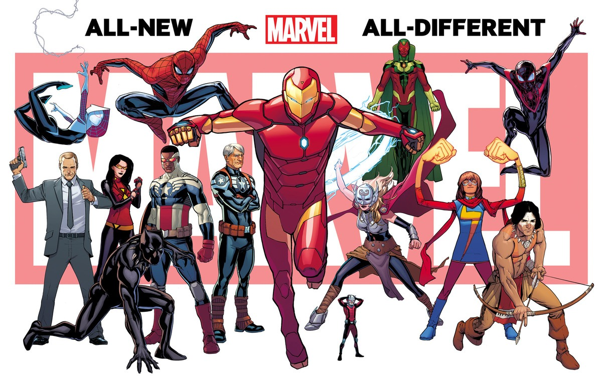
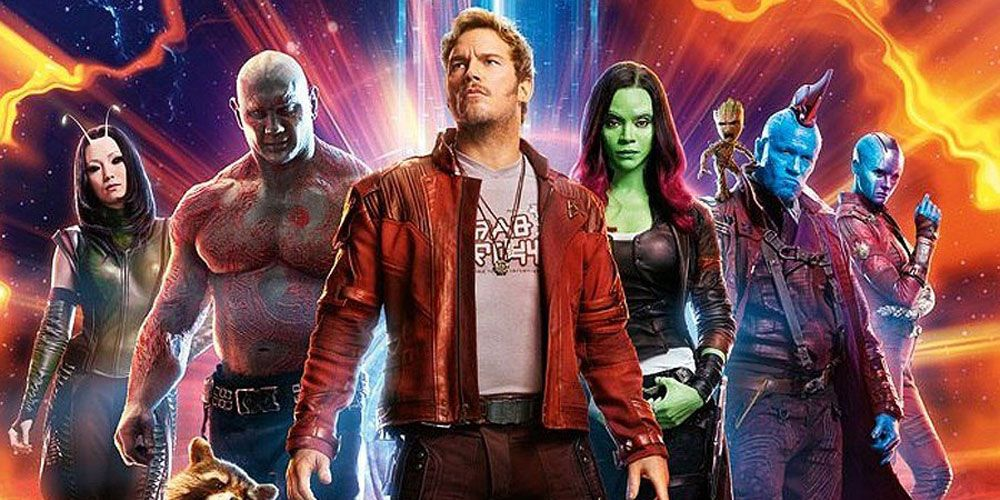
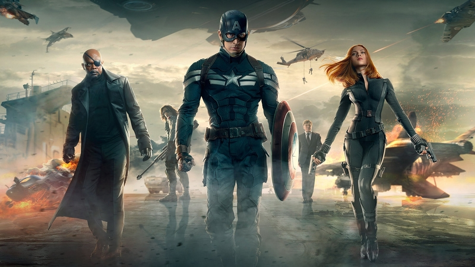
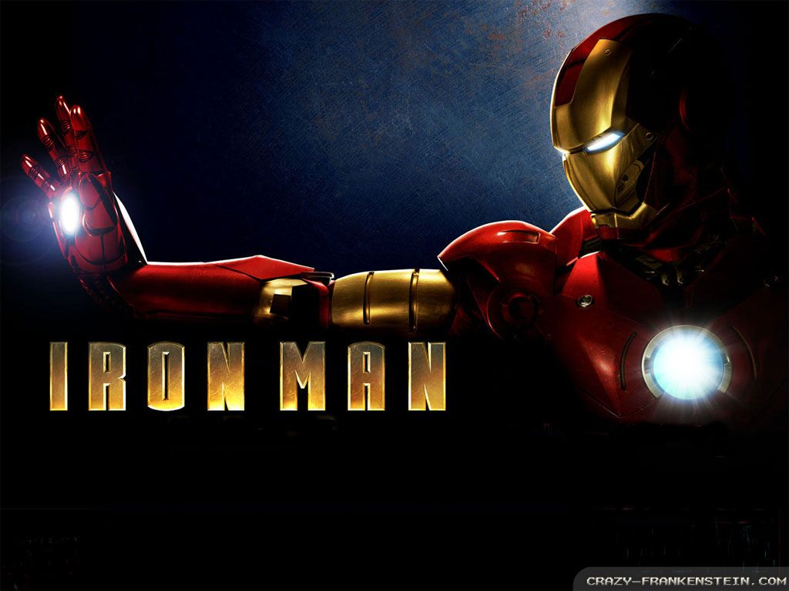
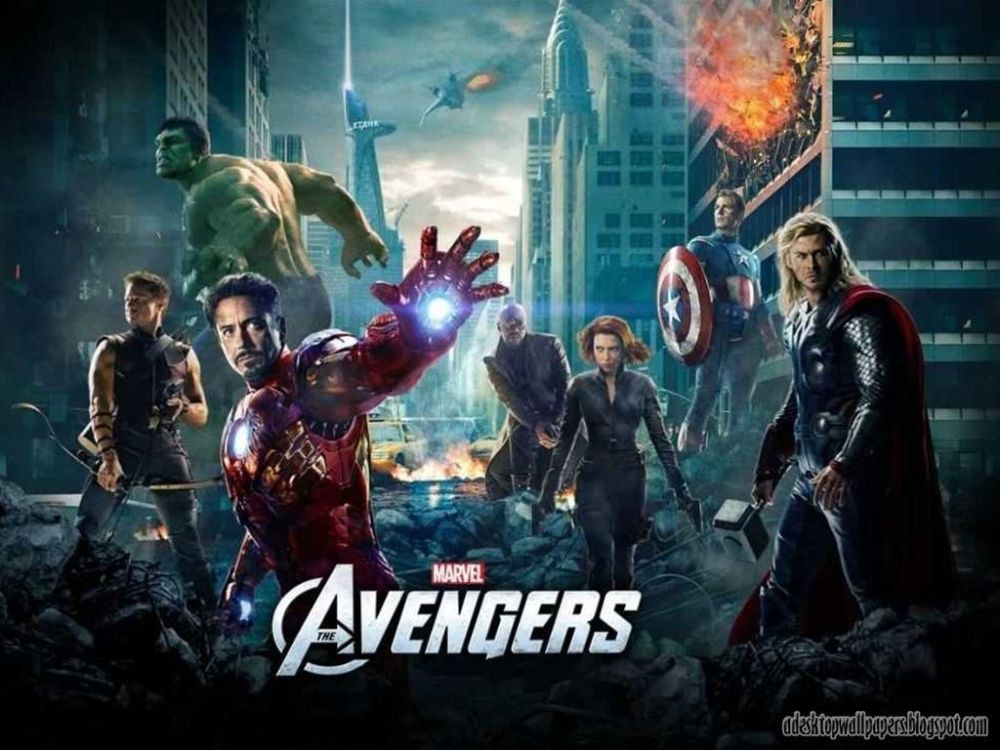
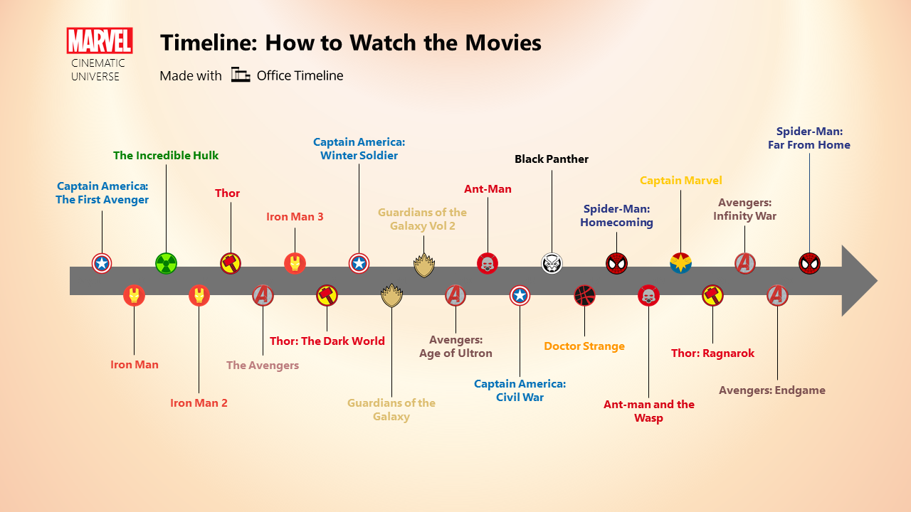

Marvel Cinematic Universe
Timeline of the Marvel Cinematic Universe: general information
Read more on Marvel TV Shows and the box office

Many people wonder: in what order to watch Marvel movies?
The huge Marvel Cinematic Universe includes movies, TV series, shorts and comics. And they are all united by different Marvel characters and a common global storyline. At the same time, some series are closely related to the films of the universe, while others have their own line.
In this version of the Marvel Cinematic Universe timeline, we have arranged movies, Marvel One-Shots, and TV shows in chronological order of their main action as the global Marvel story unfolds.
 Guardians of the Galaxy is Marvel Studios' flagship and most successful experiment. Deciding to make a film about characters whose popularity has noticeably faded among comic book fans, the studio returned the heroes to the fore, essentially giving them a second life. If the first Captain America film was a naive and patriotic story about the formation of a hero, then the sequel was shot in the spirit of modern comics about Steve Rogers (in particular, inspired by the Ed Brubaker series), where he appears not as a superhero, but as a super-agent, ready on missions that simple SHIELD agents cannot handle. With this film in 2008, the Marvel Cinematic Universe began, and for me personally, this picture is still the best among all filmed by Marvel Studios. An excellent cast, a simple plot that does not overload the viewer, a villain with adequate motivation, and, most importantly, a well-written story of the hero's origin. The Avengers are built on the same principles as "Aliens" or "Road Warrior", Whedon clearly imagined the overall dramatic picture and the final effect for the viewer that he wanted to achieve. He did not set himself the task of evenly loading the film with unremarkable action scenes, as the Russo brothers do. Whedon wanted to make a real war movie, a war movie with superheroes, in his unique dynamic style, which he began to hone in Buffy and unveiled to its fullest only in the full-length Serenity.
The Marvel Cinematic Universe (MCU) is an American media franchise and shared universe centered on a series of superhero films, independently produced by Marvel Studios and based on characters that appear in American comic books published by Marvel Comics. The franchise includes comic books, short films, television series, and digital series. The shared universe, much like the original Marvel Universe in comic books, was established by crossing over common plot elements, settings, cast, and characters.
The first MCU film is Iron Man (2008), which began the films of Phase One culminating in the crossover film The Avengers (2012). Phase Two began with Iron Man 3 (2013) and concluded with Ant-Man (2015). Phase Three began with Captain America: Civil War (2016) and concluded with Spider-Man: Far From Home (2019). The first three phases in the franchise are collectively known as "The Infinity Saga". The films of Phase Four will begin with Black Widow (2021) and are set to conclude with Guardians of the Galaxy Vol. 3 (2023).
Marvel Television expanded the universe to network television with Agents of S.H.I.E.L.D. on ABC in 2013, followed by streaming television with Daredevil on Netflix in 2015 and Runaways on Hulu in 2017, and cable television with Cloak & Dagger on Freeform in 2018. Marvel Television produced the digital series Agents of S.H.I.E.L.D .: Slingshot. Marvel Studios expanded to streaming television with Disney + for tie-in shows, starting with WandaVision in 2021 as the beginning of Phase Four. Soundtrack albums have been released for all the films and many of the television series, as well as compilation albums containing existing music heard in the films. The MCU includes tie-in comics published by Marvel Comics, while Marvel Studios has produced a series of direct-to-video short films, called Marvel One-Shots, and a viral marketing campaign for its films and the universe with the faux news program WHIH Newsfront.
The franchise has been commercially successful and has generally received a positive critical response. It has inspired other film and television studios with comic book character adaptation rights to attempt to create similar shared universes. The MCU has been the focus of other media, outside of the shared universe, including attractions at various Walt Disney Parks and Resorts, an attraction at Discovery Times Square, a Queensland Gallery of Modern Art exhibit, two television specials, guidebooks for each film, multiple tie-in video games, and commercials.
Timeline of the Marvel Cinematic Universe

First phase
Second phase
Third phase
Marvel movies and what they are about
Guardians of the Galaxy Vol. 1, 2014
The first "Guardians of the Galaxy" came out almost an author's film by James Gunn, which set a new quality bar for projects in the Cinematic Universe. It is also the funniest Marvel movie, because Gunn was able to build the perfect interaction of a chaotic team of two aliens, a talking raccoon, a human and a living tree.
Ten years ago, people would be twisting their fingers to their temples if they were told that a film about these characters could become one of the highest grossing films of 2014. But they did and proved that Marvel Studios is capable of bringing the most unexpected characters to the fore.
And Guardians of the Galaxy paved the way for space exploration. These are new planets, where the viewer can go with the help of Marvel films, and new allies of the Avengers, and, of course, new enemies that can become a threat not only to Earth, but to the entire Galaxy.
Avengers: Infinity War, 2018
 The promo campaign didn't try too hard to explain it, but Infinity War is actually only half of the dilogy. It was originally called “Infinity War. Part 1 ", but then the studio either got cold feet that the audience would not go to half the film, or decided that everything would be clear anyway. Continuation will be released only in a year. But we cannot say that this is a defective film - it has its own clear storyline, which comes to a bright ending. Continuation, of course, suggests itself, but this is a slightly different story - this one is finished and came out really impressive.
The promo campaign didn't try too hard to explain it, but Infinity War is actually only half of the dilogy. It was originally called “Infinity War. Part 1 ", but then the studio either got cold feet that the audience would not go to half the film, or decided that everything would be clear anyway. Continuation will be released only in a year. But we cannot say that this is a defective film - it has its own clear storyline, which comes to a bright ending. Continuation, of course, suggests itself, but this is a slightly different story - this one is finished and came out really impressive.
Despite the fact that in this film more familiar characters are brought together than in any film before (not only the Marvel tape, but in general in any), the studio decides to make the villain the main character. Apparently, so that the Avengers do not quarrel over who is the protagonist, they give the leading role to the antagonist. This is his story - and this move also works with a bang, although it is damn risky. Thanos has half an hour of screen time, more than any of the heroes - they have 20, 15, 10 minutes or less. It may be scary, but in this case it was completely justified and works for history.
Thanos really came out amazing - now I have to admit it completely. He enters the MCU stage after sitting on the throne for 6 years and not doing a damn thing. Having become a purple computer meme in the eyes of fans, he comes out and overshadows all the heroes who have had 10 years to fall in love with viewers - and not at all because they were simply worse prescribed. It's phenomenal.
Captain America: The Winter Soldier, 2014
And The Other War is made in the same style. This is a full-fledged spy thriller, inscribed in a superhero setting: double agents, secret organizations existing within secret organizations, special operations, a system of monitoring the activities of all people, in particular those with superpowers - all this and much more looked surprisingly unusual and markedly contrasted with previous projects Marvel Studios.
Also, The Other War is rebooting the Marvel Cinematic Universe for the first time, depriving it of the ubiquitous SHIELD organization. And this means that the planet is losing oversight, which leads both to new heroes who have appeared without the knowledge of SHIELD, and to new threats, which there will be no one but the Avengers to suppress.
Iron Man, 2008
Tony Stark in "Iron Man" is not an ideal hero, not an example to follow, but a simple man with his own problems and shortcomings (for example, alcoholism and ego). Iron Man was the most independent film possible. It certainly has several bridges to the future (in particular, Nick Fury's cameo), but the picture is not perceived as part of something larger. And this is a huge plus.
New Marvel Studios films are difficult to watch without context, and Iron Man is still the ideal entry point into the cinematic universe. Separately, it should be noted that this film rebooted the career of Robert Downey Jr., making him a superstar.
Today, Robert is the main actor in the MCU, whose royalties could make an entire film, but then in 2008 he turned out to be the perfect match for Tony Stark. And for 11 years now, the actor has been unable to part with this image. And, frankly, I would not want him to still be able to break up with Tony.
The Avengers, 2012
And this final scene of the Battle of New York is the only action-packed episode in the history of Marvel films where the viewer truly takes their breath away. The main thing here is not the special effects and not the choreography of fights, but the individual actions of the heroes, the final stage of revealing the characters through actions, where everything is solved absolutely brilliantly, from Cap throwing a grenade to the Hulk and Thor fighting shoulder to shoulder.
With the possible exception of Burton's Batman, The Avengers is the best comic-book movie, worth the rest of the Marvel Universe in and of itself. For the sake of The Avengers, all of this was really worth creating so that these actors in the roles of these characters could meet on the same screen in this scenario of this director.